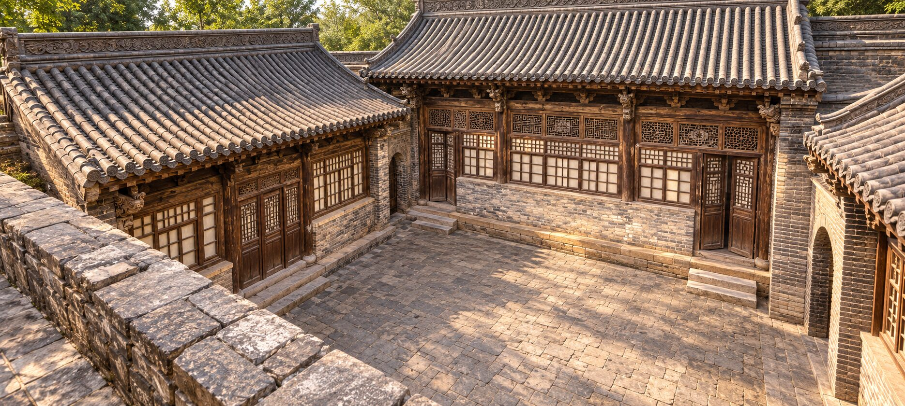
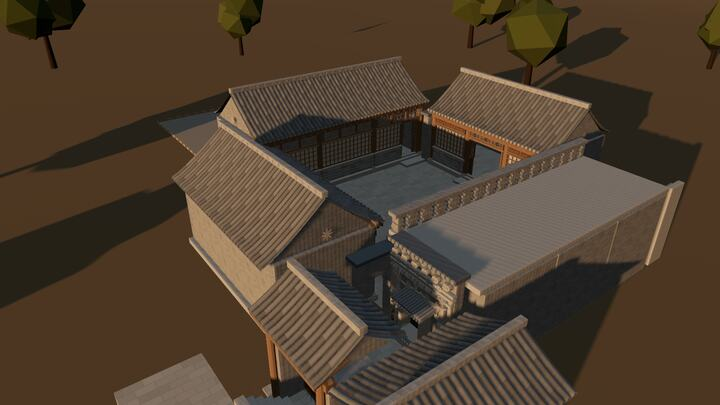
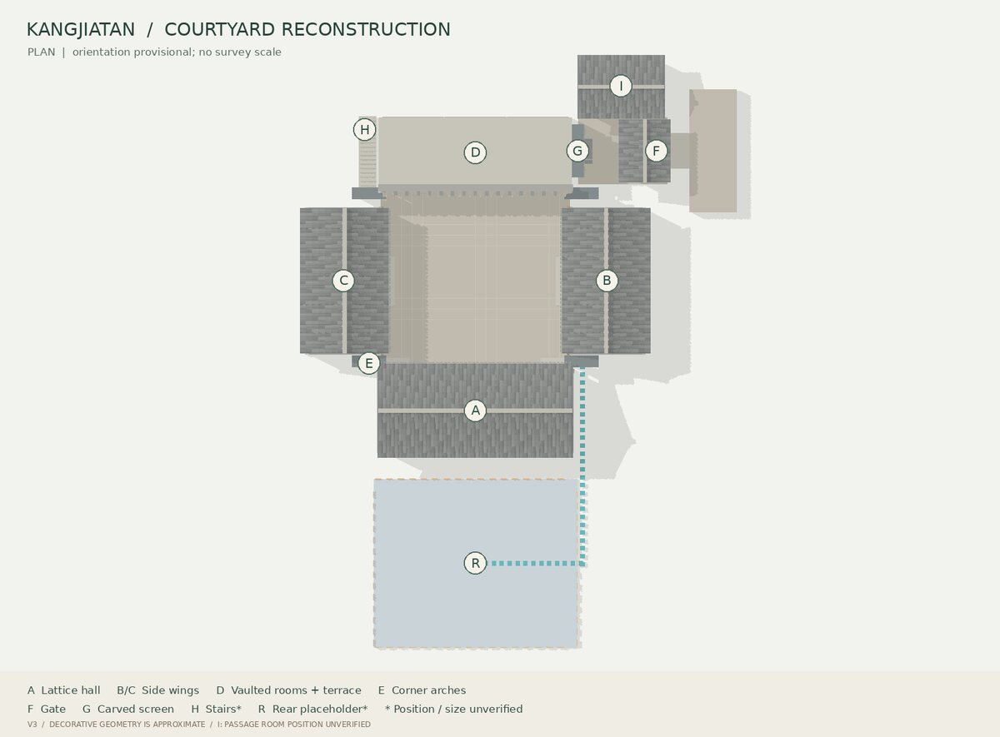
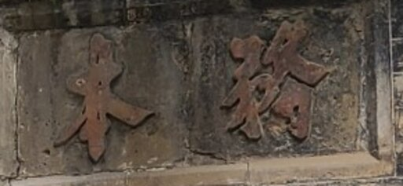
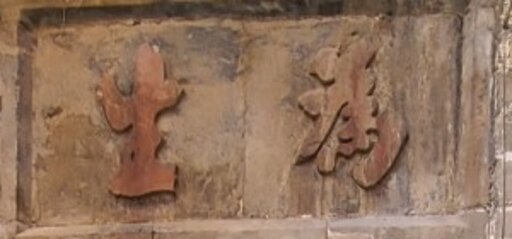

《保德州乡土志》· 民国五年（1916）石印本
船筏停泊的佳港
自康家灘而東關而馬家灘均有佳港船筏停泊
从康家滩到东关、马家滩，沿岸都是可停船筏的好港湾。同节还记康家滩附近有腰庄、石板沟的山水汇入黄河。

晋商走口外 · 甘草起家业
图：前院盛景推定（依据现状原照生成的视觉复原，非实测）
入院院史 · HISTORY
康家滩欣院位于山西省忻州市保德县东关镇康家滩村，地处晋陕峡谷黄河东岸、旧保德州城东侧。据地方文史资料《保德名胜》记载，清代中期“走口外”之风盛行，村中康氏远赴口外掏甘草、做生意，发迹后返乡，用口外挣来的银钱修起了这座院落群。“欣院”是当地对这座康家大院的俗称。
院子被视为“中原文化与大漠文化典型的结合体”：砖雕的题材与刀法，既有汉族风格，也有蒙古族风格，专家誉之为民族交融的典范、晋西北大院文化的代表。院内的对联与砖雕，在特殊年代被村民用泥包裹起来，因而得以保存。
现场文物说明牌记载：院落座西向东，占地面积982平方米，由南北两座形制相同的四合院组成。1941年，八路军一二〇师二旅兼晋绥军区第二军分区由河曲迁驻保德，司令部即设在这里。2002年8月，保德县人民政府公布其为县级文物保护单位。
晋商 · ZOU KOUWAI
河曲保德州，十年九不收；
男人走口外，女人挖野菜。—— 晋西北民谣
保德地处晋陕蒙交界的黄河岸边，土地瘠薄、十年九旱。明清以来，一代代保德人渡过黄河、越过长城，到口外的草原上垦荒、放牧、经商，史称“走西口”，当地人习惯叫“走口外”。
口外的鄂尔多斯高原沙地广布，是著名的甘草产区。甘草根深耐旱，挖掘、晾晒、打捆之后，再经驼道与水路转运内地药市。据《保德名胜》记载，欣院的主人正是清代“走口外掏甘草做生意发了迹”的典型代表。
走口外的晋商，多把在外积攒的银钱带回故土，修宅置地。欣院一砖一瓦里，藏着的正是这份闯荡与归乡。
甘草味甘、性平，善于调和诸药，被古人誉为“国老”。口外的甘草，是晋商药材贸易里的重要货品。
鄂尔多斯高原的沙地草原盛产甘草，杭锦一带出产的“梁外甘草”尤负盛名。
在口外挣下的银钱，最终化作黄河岸边的青砖大院——欣院正是这份闯荡与归乡的见证。
甘草调和百药，
欣院融汇两种文明。
营造 · ARCHITECTURE
据现场说明牌，欣院由南北两座形制相同的四合院组成（《保德名胜》称“前后两院”）。下图根据现状原照建立的研究模型，示意其中一院的构成。点选部位查看说明；位置与尺寸均未经实测。
A
原照可见形制 · 尺寸未实测
三开间、四根主柱；两端开门，中间为连续的窗槛墙。上槛九组花格，有八角格、折线回纹与中央星形；梁端雕兽形承托，柱下石础层层回转。
《保德名胜》记载，欣院砖雕的题材有暗八仙、琴、棋、书、画；刀法上有镂空雕、高浮雕、浅浮雕。同一院中，汉族与蒙古族两种审美并存。
花纹微微隆起于砖面，线条细密，宜作边饰与底纹。
形象凸起过半，层次深、光影强，适合主题纹样。
雕透砖体，前后通透，花墙与女儿墙的十字镂空即属此类。
暗八仙：以八仙所持法器代指八仙
琴棋书画：文人雅趣
草原上的吉祥图案，常见于毡帐、马具与服饰
以上为两种传统中的常见纹样类型，帮助读者辨识风格；欣院砖雕的具体题材请以实物与原照为准。
云游 · 3D TOUR
载入依据现状原照建立的可编辑三维模型（约40万面）。点选标签走近细看，切换晨、午、暮、夜，或开启“推定标示”查看哪些构件尚无照片直接依据。

三维模型约 2.1 MB
正在搭建院落 0%
拖动旋转 · 滚轮或双指缩放 · 右键或双指平移
当前浏览器无法启用 WebGL。可先查看研究模型平面与盛景图。

模型来源：康家滩宅院建筑细节复原研究第三版（jin-courtyard-v3）。三维网格为真实可编辑构件，纹饰为类型化近似，不是摄影测量或测绘成果；方位依现场说明牌暂定，后院以虚体占位。网页版经结构精简与网格量化压缩（约9.5MB→2.1MB），构件分组与来源照片编号保持不变。
盛景 · RESTORATION PLATES
依据现状原照，推定院落“维护完好”时的样子。每组图版都附上对照原照，并分别列出“本图呈现”与“仍需核实”——盛景图是视觉推定，考据以原照为准。
家训 · FAMILY MAXIMS
治家要术不外勤而俭
处世良谋唯在谦而和
《保德名胜》记载，照壁上的砖雕对联“治家要术不外勤而俭，处世良谋唯在谦而和”，反映了院主人的处世哲学。
《论语·学而》：“君子务本，本立而道生。”致力根本，根本既立，道自然生。

《尚书·泰誓下》：“树德务滋。”培植德行，务求日益滋长。
《大学》：“生财有大道……为之者疾，用之者舒，则财恒足矣。”勤勉治生，经营有道。

坦率真诚，不事矫饰——晋商重信守诺，以诚待人。
《保德名胜》记为东、西、南、北四个配院的“树德”“为生”“率真”“务实”八字砖雕；张广明《许光达司令员在保德》作“务本，树德，为生，率真”。现场原照可见“務本”。
特殊年代里，村民用泥把院内的对联和砖雕包裹起来，使它们躲过了破坏，至今保存完好。一层黄泥，护住的是一座院子的家训，也是一方百姓对家园的珍重。（据《保德名胜》）
古渡 · THE YELLOW RIVER
早在清代方志中，康家滩就已留下名字。地名、港泊、山崩与一次帝王渡河，勾勒出这座黄河岸边村庄的往昔——它们是村庄的历史，也是认识欣院所处环境的背景。
《保德州乡土志》· 民国五年（1916）石印本
自康家灘而東關而馬家灘均有佳港船筏停泊
从康家滩到东关、马家滩，沿岸都是可停船筏的好港湾。同节还记康家滩附近有腰庄、石板沟的山水汇入黄河。
《保德州乡土志》· 圣泽
三月初一日啓鑾由南門至康家灘渡河結營府谷
康熙三十六年（1697）农历三月初一，康熙帝离开保德州城，出南门至康家滩渡过黄河，在府谷扎营。方志记的是渡河地点，并未说他驻跸欣院；据《保德名胜》，欣院建于清代中期，晚于此次渡河。
清《保德州志》· 都里 / 山川
“都里”部分把康家塔、康家滩列入宣化坊；“山川”部分亦单列康家滩，位于旧州城东侧。各条目里数记作三里、五里不等，这里不折算成现代距离。
《府谷县志》· 祥异
对岸府谷的县志记载：康熙三十五年腊月二十七日，保德康家滩山崩，至三十六年正月初二方止。一条大河，两岸方志互相印证。
烽火 · 1941—1945
1941年，八路军一二〇师二旅兼晋绥军区第二军分区由河曲迁驻保德，司令部设在康家滩。1942年春，许光达从延安经兴县来到保德，任二分区司令员兼独立二旅旅长。张广明《许光达司令员在保德》记述，二分区司令部“就设在康家滩村姓康的财主院内（俗称欣院）”，彭绍辉、许光达先后在正窑办公。
二分区当时分管神池、五寨、岢岚、河曲、保德、偏关六县，是晋绥军区至关重要的前哨阵地。隔河相望的府谷，长期驻扎着国民党军第二十二军八十六师二五八团。
一河两岸
河西国民党军二五八团团长高致国，是许光达统战工作的主要对象。“只要他高致国是父母所生，是炎黄子孙，我就不信他没一点血性，没有一点骨气！”许光达派员过河，晓以民族大义。
不久，高致国突然邀许光达过河赴宴。众人劝阻，许光达说：“即使是‘鸿门宴’我也要闯一回！”席间，一句“中国人不打中国人”，打动了这位团长。
此后高致国回访保德，看了东关井然的抗日秩序，看了康家滩、郭家滩的民兵训练与大生产，还有夜间作战和地雷战演习，感叹：“许司令治军有方，卑职佩服。”
据张广明《许光达司令员在保德》
晋绥二分区大众剧社迁往康家滩，1944年1月改名晋绥边区二中剧社，烽火中传出文艺之声。据《忻州日报》2023年4月11日
这里也是晋绥边区特等劳动模范、晋西北股份制办企业的创始人康三年奋斗过的地方。据《保德名胜》
许光达大将诞辰100周年之际，中央电视台军事频道在此拍摄五集文献纪录片《许光达大将》。据《保德名胜》
欣院已辟为保德县青少年德育教育基地；2022年，一二〇师二旅司令部旧址列入忻州市第三批市级文物保护单位。
年表 · TIMELINE
村庄事件、院落登记与文献出版分开标注；方志记载的村事，不等同于欣院本身的经历。
康家滩地名见于《保德州志》“都里”与“山川”。
村庄《府谷县志》记保德康家滩山崩，至次年正月初二止。
村庄康熙帝由保德州城南门至康家滩渡河，结营府谷。
村庄康氏走口外经营甘草发家，返乡修建欣院。
欣院 · 据《保德名胜》《保德州乡土志》石印刊行，记康家滩一带“均有佳港船筏停泊”。
文献一二〇师二旅兼晋绥军区第二军分区由河曲迁驻保德，司令部驻康家滩。
欣院 · 据说明牌许光达任二分区司令员兼独立二旅旅长，彭绍辉、许光达先后在正窑办公。
欣院 · 据张广明文大众剧社迁往康家滩；1944年1月改名晋绥边区二中剧社。
村庄村民以泥包裹院内对联与砖雕，使之保存至今。
欣院 · 据《保德名胜》保德县人民政府公布为县级文物保护单位。
欣院 · 据说明牌中央电视台军事频道在此拍摄五集文献纪录片《许光达大将》。
欣院《保德名胜》（保德文史丛书第七辑）出版，“晋商民居”章收录“康家滩欣院”。
文献一二〇师二旅司令部旧址列入忻州市第三批市级文物保护单位（第79项）；同年县政府工作报告提出开展旧址维修保护。
欣院 · 忻政函〔2022〕33号现状原照整理、九组盛景复原图版与三维研究模型（第三版）完成，本站上线。
研究档案 · PHOTO ARCHIVE
现场拍摄的现状原照共 64 幅不重复内容，本页精选 39 幅，可按建筑部位筛选。原照是一切复原与考据的依据。
参访 · VISIT
砖雕宜在侧光时观赏，浮雕层次最分明。先看影壁的花鸟卷草，再找角门上的“務本”。
门楼—影壁—角门—前院，依次走进一座晋西北四合院；留意北面砖券窑房的十字镂空女儿墙。
到河岸走一走，想象乡土志里“佳港船筏停泊”的旧日渡口。
院落仍有残损，请遵从现场指引，勿攀爬、勿触摸砖雕与木构，勿进入警示区域。
史料 · SOURCES
现场拍摄的现状照片，共80个文件、64幅不重复内容，经哈希核对完整保留。是一切判断的依据。
以图像生成工具按原照约束绘制的“维护完好状态”视觉推定，不是模型渲染；细小笔画、刀法与雕刻深度可能有偏差。
真实可编辑的构件网格，纹饰为类型化近似，未经测绘或摄影测量；面数多寡不代表复原准确度。
欢迎提供与欣院有关的老照片、房地契约、账簿、题记照片、修缮记录与亲历回忆。请一并说明来源、是否原件及可公开范围。